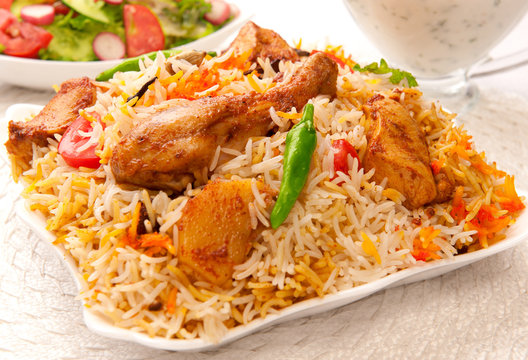
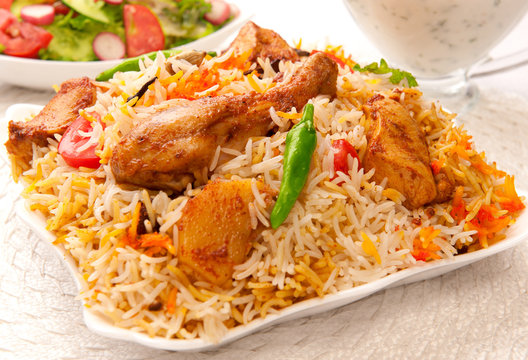
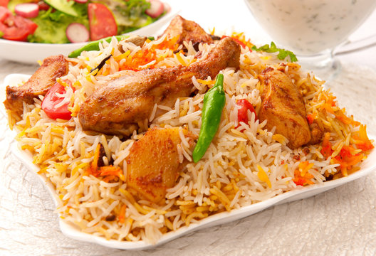

Biriani Recipe
Home
Pilau
Chinese Food
Rice with Beans
How to Cook Biriani
Details on how to cook Biriani...
Ingredients:
1 cup basmati rice
1 cup mixed vegetables (carrots, peas, potatoes)
1 cup plain yogurt
1 tablespoon biryani spice mix
1 onion, thinly sliced
2 tablespoons cooking oil
2 cups water
Fresh cilantro and mint leaves for garnish
Salt to taste
Instructions:
Rinse the rice and soak it for 30 minutes, then drain
Heat oil in a large pot. Sauté the onions until golden brown
Add the mixed vegetables and cook for a few minutes
Stir in the biryani spice mix and cook for another minute
Add the yogurt and cook until the oil separates
Add the rice and water, and season with salt
Bring to a boil, reduce heat, cover, and cook on low for 20 minutes or until rice is cooked and water is absorbed
Garnish with fresh cilantro and mint before serving

 
